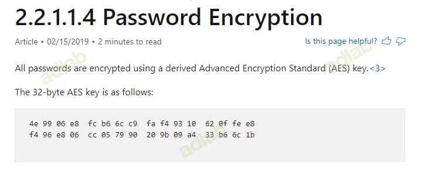
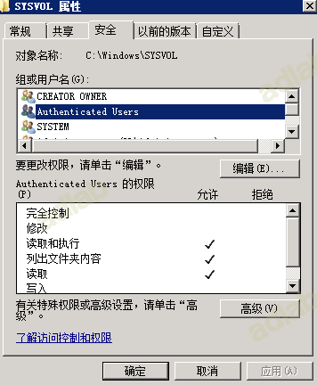
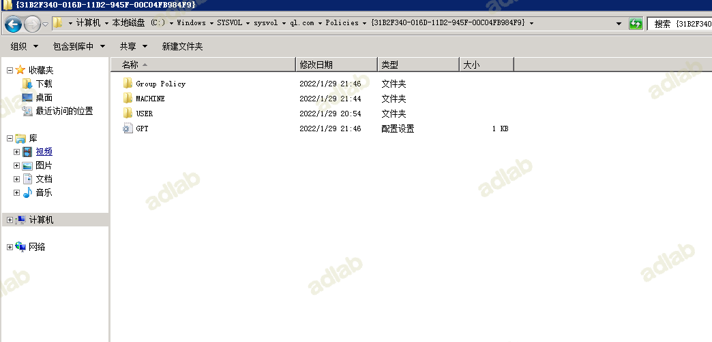
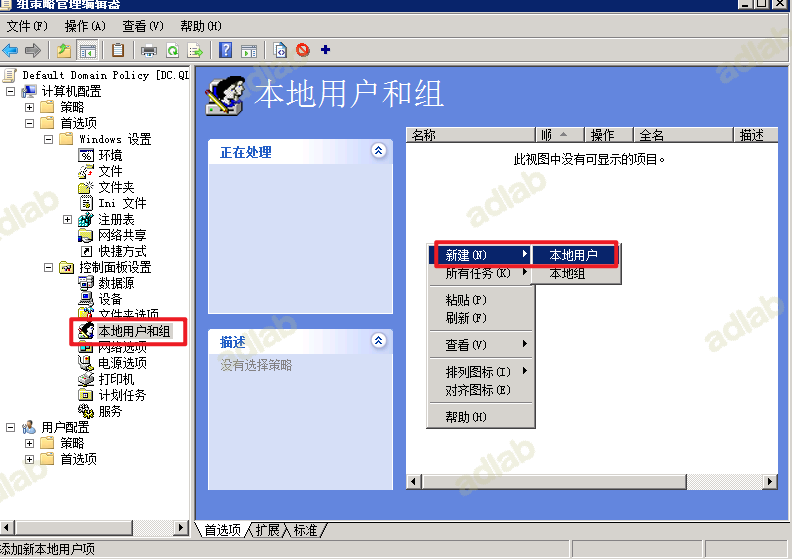
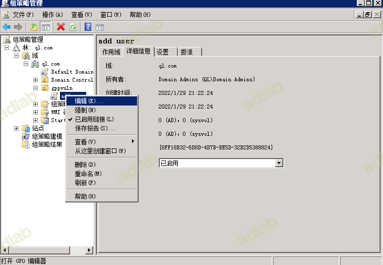

0x01 基础知识
1.组策略的认识
组策略（英语：Group Policy）是微软Windows NT家族操作系统的一个特性，它可以控制用户帐户和计算机帐户的工作环境。组策略提供了操作系统、应用程序和活动目录中用户设置的集中化管理和配置。组策略的其中一个版本名为本地组策略（缩写“LGPO”或“LocalGPO”），这可以在独立且非域的计算机上管理组策略对象。
通过使用组策略，你可以设置策略设置一次，然后将该设置复制到多台计算机上。例如，你可以在链接到域的 GPO 中设置多个 Internet Explorer11 安全设置，然后将所有这些设置应用到域中的每台计算机。
根据作用范围不同组策略可划分为多种，并且拥有自己的执行顺序和继承原则。
2.密码的难题
每台Windows主机有一个内置的Administrator账户以及相关联的密码。大多数组织机构为了安全，可能都会要求更改密码，虽然这种方法的效果并不尽如人意。标准的做法是利用组策略去批量设置工作站的本地Administrator密码。但是这样又会出现另一个问题，那就是所有的电脑都会有相同的本地Administrator密码。也就是说，如果获取了一个系统的Administrator认证凭据，黑客就可以获取他们所有机器的管理权限。
3.SYSVOL
解决办法之一是为认证数据采取SYSVOL，SYSVOL是AD（活动目录）里面一个存储域公共文件服务器副本的共享文件夹，所有的认证用户都可以读取。SYSVOL包括登录脚本，组策略数据，以及其他域控所需要的域数据，这是因为SYSVOL能在所有域控里进行自动同步和共享。
所有的域组策略存储在：
\\<DOMAIN>\SYSVOL\<DOMAIN>\Policies\
4.SYSVOL里的认证
在windows电脑中，管理需要花心思去保证本地Administrator账户（RID 500）。传统的做法（除了购买安全产品），是使用一个自定义的脚本去更改本地Administrator的密码。这样就会出现一个问题，密码肯定会明文存储在SYSVOL的脚本里(比如vbs文件)。比如黑客需要搜寻用来更改本地Administrator密码的VBS脚本，该vbs脚本在Microsoft TechNet gallery上，密码为可见的。这个脚本存在SYSVOL里，每个域用户都有读的权限，且该密码是每台电脑组策略应用的本地Administrator密码。
5.GPP（组策略首选项）
在2006年，微软收购了桌面标准的“PolicyMaker”，并重新借此与win2008发布了GPP（组策略偏好）。其中GPP最有用的特性，是在某些场景存储和使用凭据，其中包括：
- 映射驱动（Drives.xml）
- 创建本地用户
- 数据源（DataSources.xml）
- 打印机配置（Printers.xml）
- 创建/更新服务（Services.xml）
- 计划任务（ScheduledTasks.xml）
- 更改本地Administrator密码
这对管理员非常有用，因为GPP提供了一个自动化机制，可以作为急需的解决方案（比如脚本）给他们。它提供了有效的方法，利用显式凭据结合组策略部署了计划任务，一次性批量更改了电脑的本地管理的密码，也许这就是最受欢迎的利用场景吧。
6.GPP中存储的凭据
当管理创建了一个新的GPP时，SYSVOL里有一个XML文件提供了相关配置数据。如果里面提供了密码的话，那应该就是AES-256加密，看起来这加密似乎是够强力了。

然而除了在2012年前的某些点外，微软在MSDN上发布了AES的私钥，它可以用来解密这种密码。因为认证用户（所有域用户或者信任域里的用户）对SYSVOL拥有读权限。在域里的任何用户可以搜索SYSVOL共享中的带有cpassword字样的XML文件，里面包含了AES加密的密码。
7.组策略的分类
7.1本地组策略（LGP）
本地组策略（Local Group Policy，缩写LGP或LocalGPO）是组策略的基础版本，它面向独立且非域的计算机。至少Windows XP家庭版中它就已经存在，并且可以应用到域计算机。在Windows Vista以前，LGP可以强制施行组策略对象到单台本地计算机，但不能将策略应用到用户或组。从Windows Vista开始，LGP允许本地组策略管理单个用户和组，并允许使用“GPO Packs”在独立计算机之间备份、导入和导出组策略——组策略容器包含导入策略到目标计算机的所需文件。
组策略(Group Policy)是Microsoft Windows系统管理员为用户和计算机定义并控制程序、网络资源及操作系统行为的主要工具。通过使用组策略可以设置各种软件、计算机和用户策略。
7.2域组策略
当机器安装了域环境的时候,系统管理工具会多出一个功能(组策略管理),通过它，域管理员能够很方便统一地对域内的机器和用户进行统一管理。
域管理员经常会面对一个这样的问题,域成员机子的默认本地管理员密码过于简单，想进行批量修改的时候，这个时候就可以利用组策略来进行任务的批量下发。
- 1.通过在域中下发脚本来执行
- 2.在组策略首选项GPP中进行设置
- 3.本地管理员密码解决方案:LAPS(不细说这个内容，这是解决这个问题很好的方
首先我们需要了解下AD域中两个默认的共享文件夹:SYSVOL NETLOGON
net share
7.2.1 NETLOGON目录
挂载点:SYSVOL\domain\SCRIPTS 主要存放的是一些脚本信息，是AD活动目录安装时候自动创建的，是在sysvol下面的一个子目录文件夹
7.2.2 SYSVOL目录
SYSVOL目录是AD域中的一个共享文件夹，该文件夹在AD活动目录安装时候被创建。通常用来存放组策略数据 和 一些脚本 配置文件，这些策略和脚本将用于传递给域成员机器。
此外，域控机器之间因为要自动同步域数据，SYSVOL文档允许该域内的所有DC机之间进行复制，并且所有的AD用户都可以访问它
在域中，用户登录（计算机）时，会首先在SYSVOL文件查找GPO和启动脚本。同时，为了保证系统的正常运行，必须为SYSVOL保留足够的空间缓存，而且不能随意删除、改动该文件夹，要不然会出现一些组策略无法启用等报错信息
该目录由于针对的是域内所有机器和用户，所以域内中的合法用户均可以访问和执行该目录的文件。(普通的域用户也可以)

7.2.3 GPO
组策略对象，GPO（Group Policy Object），实际上就是组策略设置的集合。
你可以用GPO来存储不同的组策略信息，然后作用在指定OU或者指定作用范围发挥作用。
默认安装完AD之后，系统默认会存在两个组策略对象
Default Domain Policy
唯一ID(GUID):{31B2F340-016D-11D2-945F-00C04FB984F9} (都是相同的)
默认域策略
存放的路径:
C:\Windows\SYSVOL\sysvol\ql.com\Policies\{31B2F340-016D-11D2-945F-00C04FB984F9}

Default Domain Controllers Policy
唯一ID(GUID):｛6AC1786C-016F-11D2-945F- 00C04FB984F9｝ (都是相同的)
默认域控制器策略
管理目标“Domain Controllers”容器，影响“Domain Controllers”容器中的域控制器，域控制器账户单独保存在该容器中。
不难看到这个GPO作用的范围是DC这个OU,相应的执行优先级如下图
策略大体上分为四类，本地策略、域策略、站点策略、ou策略
顺序：local policy —> seite policy —> domain policy —> ou policy
7.2.4 GPP
我们可以看到GPP里面自定义了很多操作，比如本地用户和组的密码控制、计划任务等
在GPP出现之前，很多统一管理的操作只能通过脚本来实现，而GPP方便和简化了这样的管理,GPP你可以将其理解为一个功能点,作用是简单化、规范化组策略的发布和使用
0x02 漏洞产生原理
这个漏洞的产生原因是 使用了GPP功能，如果输入了用户的密码的话，那么密码就会以AES 256加密的形式存储在SYSVOL文件夹下的以XML后缀结尾的xml文件中，这个密码的加密密钥由微软官方给出可以进行解密，但是如果打补丁或者高版本的话，GPP服务是不能输入密码的了，这个漏洞也就相应不存在了。
GPP漏洞只在2008没打补丁版本上存在，超过2008版本的系统是没办法写入密码的。
对应的GPP补丁：KB2962486
0x03 GPP漏洞的利用
打开组策略，找到默认域策略

计算机配置–首选项-控制面板设置–本地用户和组，新建本地用户

选择内置管理员
查看默认的ID
如果在攻击的时候不是的ID，可通过搜索的方式
dir /s /a \\DC\SYSVOL\*.xml
也可以使用for循环
for /r \\DC/sysvol %i in (*.xml) do @echo %i
根据该ID去SYSVOL搜索即可得到该目录下的文件
C:\Windows\SYSVOL\sysvol\ql.com\Policies\{31B2F340-016D-11D2-945F-00C04FB984F9}\Machine\Preferences\Groups
可以看到在该Groups目录下的xml文件立马就可以看到我们设置gpptest用户名对应的加密的密码1dLl2PMSed1A9KZn/hQgrg
cpassword=“z1WscOKgpeck7EiDP2UwboWZneRJg0wv4o2FLS9XsSE”
自动化获取GPP文件的脚本：https://github.com/Lucifer1993/PLtools/blob/main/Get-GPPPassword.ps1
解码脚本：https://github.com/Lucifer1993/PLtools/blob/main/gpp-decrypt.py
使用kali自带的gpp-decrypt工具进行解密
gpp-decrypt z1WscOKgpeck7EiDP2UwboWZneRJg0wv4o2FLS9XsSE
方法2
新建一个组织单位
新建好之后再新建一个GPO
在详细信息中可以看到改策略的id
编辑该策略

新建本地用户
输入用户名密码
当组织单位中有用户时，则会执行该策略
最后运行命令 gpupdate，强制更新组策略设置
gpupdate /force
查看即可
C:\Windows\SYSVOL\sysvol\ql.com\Policies\{8FF18B32-6D8D-4D7B-BE5D-32B2D5388824}\Machine\Preferences\Groups
可以看到在该Groups目录下的xml文件立马就可以看到我们设置gpptest用户名对应的加密的密码1dLl2PMSed1A9KZn/hQgrg
解码脚本：https://github.com/Lucifer1993/PLtools/blob/main/gpp-decrypt.py
使用kali自带的gpp-decrypt工具进行解密
gpp-decrypt 1dLl2PMSed1A9KZn/hQgrg

如果是在组策略中新建GPO则需要将Domain computers添加到组策略应用的组中
总结：
共享组策略目录是域中最容易出现密码的地方，一般管理员会把一些bat脚本放在里面用来重置域内客户机器本地的administrator的密码，但是这个密码也不一定正确，渗透都是靠运气。所以说当进入域内，先查看共享组策略目录中是否存在密码，如果存在密码可以先用这个密码进行横向一下。
0x04 参考地址
https://www.jianshu.com/p/0e61573dcd18
https://xz.aliyun.com/t/7784